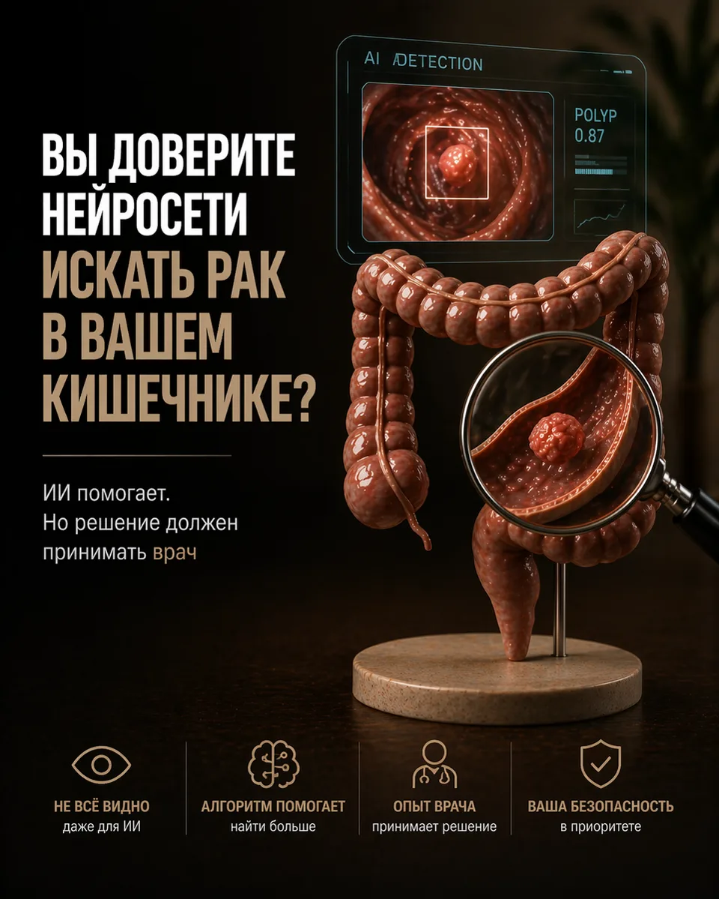
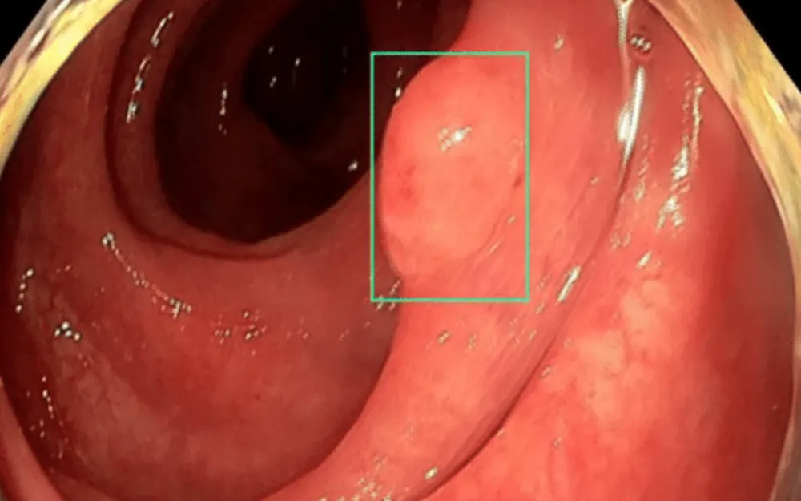

Вы доверите нейросети искать рак в кишечнике?

Каждый пятый полип при колоноскопии может остаться незамеченным. Именно поэтому в эндоскопию приходит искусственный интеллект. Но кто принимает решение — алгоритм или врач?
Анне 54 года. Врач назначил колоноскопию для профилактики, осмотрел кишечник и сказал: «Всё чисто». Через два года у неё выявили рак третьей стадии. Позже выяснилось: полип был, просто маленький и за складкой. Человеческий глаз его не заметил.
Каждый пятый полип при колоноскопии остаётся незамеченным, а 20–30% случаев рака толстой кишки — это пропущенные ранее аденомы. Для этого и нужен ИИ-ассистент.
Два типа систем: CADe и CADx
CADe (Computer-Aided Detection) ищет подозрительные участки и выделяет их на экране цветным маркером. Работает как сканер, который постоянно «прочёсывает» поле зрения.
CADx (Computer-Aided Diagnosis) отвечает на вопрос «что это?»: оценивает структуру поверхности, сосуды и форму образования и предлагает вероятный диагноз.
Обе системы обучают на десятках тысяч эндоскопических снимков, размеченных врачами.

Что показал опрос 2026 года
Крупнейшее исследование провела World Endoscopy Organization (WEO): 1237 пациентов и 476 эндоскопистов из разных стран.
- 75,5% пациентов поддерживают ИИ для анализа изображений.
- 92,3% настаивают на обязательном контроле врача.
- 90,3% эндоскопистов считают, что ИИ повышает качество исследований.
- 85,3% — что улучшает клинические исходы.
Опасения врачей распределились так: 47% — юридическая ответственность, 49% — время процедуры, 34,8% — зависимость от подсказок. Большинство считает, что ответственность за ошибки всё равно лежит на эндоскописте.
Почему ИИ не заменит врача
- Алгоритм не понимает клинический контекст: возраст, анамнез, наследственность, сопутствующие болезни.
- CADe может давать ложные срабатывания на складки или остатки содержимого.
- CADx даже при точности выше 90% оставляет 5–10% ошибок — в онкологии это критично.
Интересный эффект: врачи, регулярно работающие с CADx, со временем лучше диагностируют и без подсказок. В исследовании 2026 года точность оптической диагностики росла примерно на 3,4% в месяц. Наибольший выигрыш — у специалистов среднего уровня, они подтягиваются к экспертам.
ИИ — это помощник, который снижает усталость и делает врача внимательнее. Решение всё равно принимает человек.
Коротко о главном
- ИИ реально повышает качество осмотров.
- Пациенты поддерживают, но хотят контроля врача.
- Юридические и этические правила ещё формируются.
- ИИ — не замена, а инструмент поддержки.
Статья носит информационный характер и не заменяет консультацию врача. Не занимайтесь самодиагностикой.